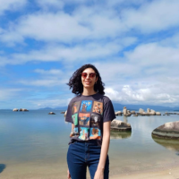

Rebeca Rieper da Silva | WDD130
Hello, my name is Rebeca Rieper da Silva. I'm 26 years old and I'm from Brasil.
I love to travel and learn about new cultures. In my free time, I enjoy hiking, reading, and spending time with my friends and family.